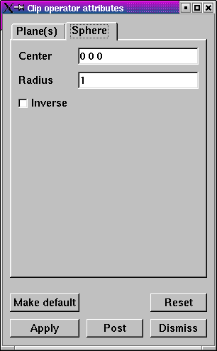
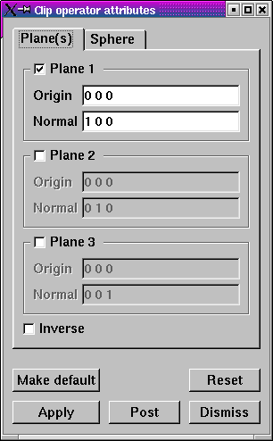

The Clip operator uses up to three planes to define the region that is clipped away. Each plane is specified in origin-normal form where the origin is a point in the plane and the normal is a vector that is perpendicular to the plane. When a plane intersects a plot, it serves as a clipping boundary for the plot. The plane's normal determines which side of the plane is clipped away. The region on the side of the plane pointed to by the normal is the region that the Clip operator clips away. If more than one plane is active, the region that is left as a result of the first clip operation is clipped by the next plane, and so on.
Only one plane needs to be used to remove half of a plot. Find the center of the database by inspecting the 3D axis annotations in the visualization window. Type the center as the new plane origin into the Origin text field for plane 1 then click the Plane 1 check box for plane 1 (see figure). When the Apply button is clicked, half of the plot should be removed. You can rotate the clipping plane by entering a new normal vector into the Normal text field. The normal is specified by three floating point values separated by spaces.
|  |
| Figure 15 |
|  |
| Figure 16 |